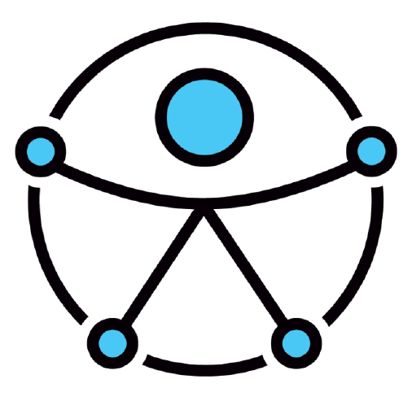

<nav class="navbar is-fixed-top" role="navigation" aria-label="barra de navegação">
  <div class="container">
    <div class="navbar-brand is-relative">
      <a class="navbar-item" routerLink="/" tabindex="0">
        <span class="title is-4 has-cs-subtitle">
          <span class="icon" aria-hidden="true">
            <i class="fab fa-accessible-icon"></i>
          </span>
          <span>
            Sem Barreiras
          </span>
        </span>
      </a>
      <span class="navbar-item pl-0 no-focus" tabindex="-1">
        
      </span>

      <button class="navbar-burger burger" aria-expanded="false" (click)="toggleMenu()">
        <span aria-hidden="true"></span>
        <span aria-hidden="true"></span>
        <span aria-hidden="true"></span>
        <span class="screen-reader-only">menu</span>
      </button>
    </div>
    <div class="navbar-menu" [class]="{ 'is-active': menuIsActive }">
      <div class="navbar-start" *ngIf="userIsLogged">
        <a class="navbar-item" routerLink="/estabelecimentos" routerLinkActive="is-active" tabindex="0">
          Estabelecimentos
        </a>
        <a class="navbar-item" routerLink="/estabelecimentos/adicionar" routerLinkActive="is-active" tabindex="0">
          Adicionar estabelecimento
        </a>
        <div class="navbar-item has-dropdown is-hoverable" *ngIf="userIsAdmin">
          <a class="navbar-link" tabindex="0">
            Administração
          </a>
          <div class="navbar-dropdown">
            <a routerLink="/admin/estabelecimentos" class="navbar-item" tabindex="0">
              Estabelecimentos
            </a>
            <a routerLink="/admin/avaliacoes" class="navbar-item" tabindex="0">
              Avaliações
            </a>
            <a routerLink="/admin/usuarios" class="navbar-item" tabindex="0">
              Usuários
            </a>
          </div>
        </div>
      </div>
      <div class="navbar-end">
        <div class="navbar-item">
          <div class="buttons" *ngIf="userIsLogged">
            <a (click)="logout()" class="button is-primary is-outlined" tabindex="0">
              <span>
                Sair
              </span>
              <span class="icon" aria-hidden="true">
                <i class="fas fa-sign-out-alt"></i>
              </span>
            </a>
          </div>
          <div class="buttons" *ngIf="!userIsLogged">
            <!-- <a routerLink="/cadastrar" routerLinkActive="is-active" class="button is-primary" tabindex="0">
              <strong>Cadastrar</strong>
            </a> -->
            <a routerLink="/entrar" routerLinkActive="is-active" class="button is-primary is-outlined" [class]="{ 'is-inverted': navbarIsTransparent }" tabindex="0">
              Entrar
            </a>
          </div>
        </div>
      </div>
    </div>
  </div>
</nav>
<router-outlet></router-outlet>
<footer class="footer has-text-centered">
  <div class="container">
    <p>
      OSC Conexão Solidária - CNPJ 24.236.775/0001-29
      <br>
      <a href="mailto:sembarreiras.plat@gmail.com">sembarreiras.plat@gmail.com</a>
    </p>
    <hr>
    <p>Desenvolvido por <a href="https://unze.com.br" rel="nofollow" target="_blank">Unze</a></p>
  </div>
</footer>
<ngx-ui-loader
  text="Carregando"
  fgsColor="#156fe4"
  pbColor="#156fe4"
  fgsType="ball-scale-multiple">
</ngx-ui-loader>
